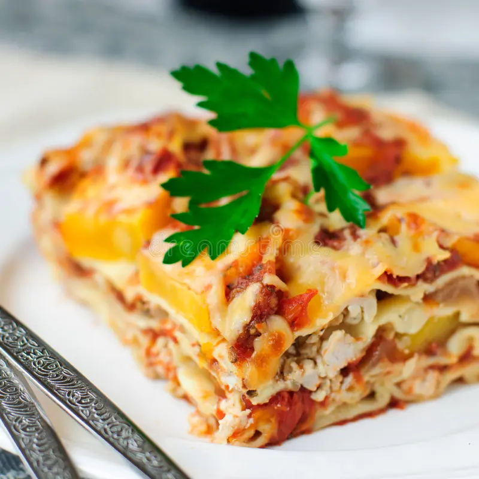

Delicious Lasagna
A classic, cheesy lasagna that’s perfect for family dinners.
Ingredients
- 12 lasagna noodles
- 500 g ground beef
- 700 ml tomato sauce
- 250 g ricotta cheese
- 200 g shredded mozzarella
Steps
- Preheat oven to 190 °C (375 °F).
- Cook noodles until al dente; drain.
- Brown beef in a pan and stir in tomato sauce.
- Layer noodles, sauce, ricotta, and mozzarella in a baking dish.
- Bake 45 minutes until bubbly and golden.
- Let rest 5 minutes, slice, and enjoy!